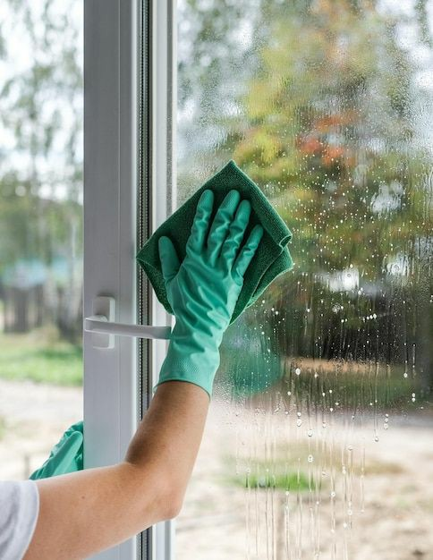

Window cleaning is a crucial aspect of maintaining the cleanliness and appearance of any building, whether it's a residential home, commercial property, or industrial facility. Clean windows not only enhance the visual appeal of a building but also contribute to a healthier environment and can even impact the longevity of window materials. This article explores the significance of window cleaning, provides practical tips
for effective cleaning, and discusses the benefits of maintaining spotless windows.
Why Window Cleaning Matters
Aesthetic Appeal:
Clean windows significantly enhance the visual appeal of a building. They allow natural light to enter, making spaces appear brighter and more inviting. Streaks, smudges, and dirt on windows can detract
from the overall appearance of a property, affecting its curb appeal and impression on visitors.Enhanced Natural Light:
Windows that are free from dirt and grime allow more natural light to penetrate into a building. This not only improves the ambiance of indoor
spaces but can also reduce the need for artificial lighting, contributing to energy efficiency.Health and Hygiene:
Regular window cleaning helps to remove dust, pollen, and other allergens that can accumulate on window surfaces. This contributes to a
healthier indoor environment, especially for individuals with allergies or respiratory conditions.Maintenance and Longevity:
Dirt, grime, and environmental pollutants can cause damage to window surfaces over time. Regular cleaning helps prevent the buildup of substances that can lead to permanent damage, such as corrosion or staining.
This extends the lifespan of windows and reduces the need for costly repairs or replacements.
← back